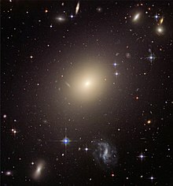
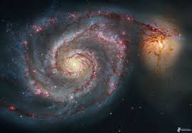
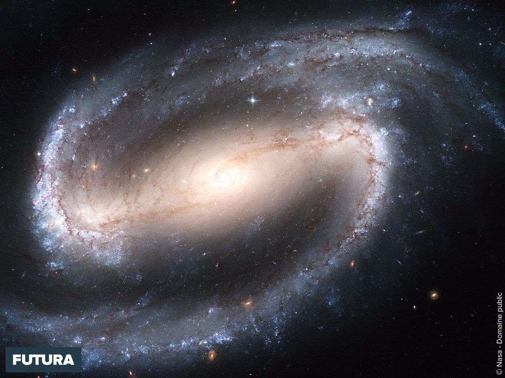

Une galaxie est un assemblage d'étoiles, de gaz, de poussières et peut-être essentiellement de matière noire,contenant parfois un trou noir supermassif en son centre.
La Voie lactée, la galaxie dans laquelle se trouve le Système solaire, compte quelques centaines de milliards d'étoiles et a une extension de l'ordre de 80 000 années-lumière.
La plupart des galaxies typiques comportent un nombre similaire d'astres, mais il existe aussi des galaxies naines comptant à peu près une dizaine de milliards d'étoiles , et des galaxies
géantes comptant plusieurs milliers de milliards d'étoiles . Sur la base de ces chiffres et de la taille de l'univers observable, on estime que celui-ci compte quelques centaines de milliards
de galaxies de masse significative.
Toutes les étoiles ne sont pas situées dans les galaxies. S'il semble établi que c'est au sein des galaxies que se forment les étoiles, celles-ci sont susceptibles d'en être expulsées,
soit du fait d'interactions entre galaxies, soit du fait de rencontres rapprochées entre une étoile et un astre très massif, tel un trou noir supermassif situé au centre d'une galaxie.
On observe ainsi certaines étoiles dotées d'une vitesse élevée par rapport à leur galaxie, signe qu'elles n'y sont plus liées gravitationnellement. De telles étoiles sont de ce fait appelées
« étoiles en fuite ».
Les différents types de galaxies:
Galaxies elliptiques
Ces galaxies ont un profil ellipsoïdal, leur donnant une apparence elliptique quel que soit l'angle de vue.
Leur apparence montre peu de structures et elles ne possèdent pas beaucoup de matière interstellaire. Par conséquent, ces galaxies contiennent
peu d'amas ouverts et ont un taux de formation d'étoiles peu élevé. Des étoiles plus anciennes et plus évoluées, tournant autour de leur centre
de gravité commun de manière aléatoire, dominent donc ces galaxies. En ce sens, elles présentent une certaine similitude avec les amas globulaires, mais à plus grande échelle.
Les galaxies les plus grandes sont des elliptiques géantes. On pense que de nombreuses galaxies elliptiques se sont formées grâce à une interaction de galaxies qui ont fini
par fusionner. Elles peuvent atteindre des tailles énormes (comparée aux galaxies spirales, par exemple). D'autre part, ces galaxies elliptiques géantes sont souvent trouvées
au cœur des grands amas de galaxies. Les galaxies starburst sont souvent le résultat d'une collision des galaxies. La galaxie elliptique géante la plus proche de notre Galaxie est M87,
dans la constellation de la Vierge, à 60 millions d'années-lumière.

Galaxies spirales
Les galaxies spirales forment la classe la plus emblématique des galaxies. Elles sont faites d'un disque en rotation et composé d'étoiles et de milieu interstellaire,
avec un bulbe central d'étoiles généralement plus anciennes. De ce bulbe émergent des bras relativement brillants. Dans le schéma de classification de Hubble,
les galaxies spirales correspondent au type S, suivi d'une lettre (a, b, ou c), qui indique le degré d'enroulement des bras spiraux ainsi que la taille du bulbe central.
Une galaxie Sa est dotée de bras relativement mal définis et possède une région centrale relativement importante. En revanche, une galaxie Sc possède des bras très ouverts
et bien tracés ainsi qu'un bulbe de petite taille.Les bras sont visibles à cause de leur teneur en étoiles jeunes et brillantes, dues à la forte densité de matière qui
facilite la formation d'étoiles. Or les étoiles les plus lumineuses sont aussi les plus massives, et ont une durée de vie très brève (quelques millions d'années contre 10 milliards
d'années pour le Soleil), aussi les zones les plus lumineuses sont-elles au voisinage des lieux de formation d'étoiles, les étoiles massives n'ayant pas le temps de s'en éloigner significativement
lors de leur brève existence.

Galaxies spirales barrées
La majorité des galaxies spirales ont une bande d'étoiles linéaire en leur centre, à partir de laquelle émergent les bras spiraux. Dans la classification de Hubble,
elles sont désignées d'un SB, suivi d'une lettre minuscule (a, b, ou c), indiquent encore une fois la forme et la disposition des bras spiraux (de la même manière que les galaxies spirales non-barrées).
On pense que les barres sont des structures temporaires qui peuvent survenir à la suite d'un rayonnement de densité du cœur vers l'extérieur, ou à la suite d'une interaction avec une autre galaxie faisant intervenir la force de marée.
De nombreuses galaxies spirales barrées sont actives, cela est peut-être du gaz canalisé le long des bras27.
Notre propre galaxie est une grande galaxie spirale barrée28 d'environ 30 000 parsecs de diamètre et de 1 000 parsecs d'épaisseur.

Galaxies naines
En dépit de la prééminence des grandes galaxies elliptiques et spirales,il
semble que la plupart des galaxies de l'univers sont des galaxies naines. Ces galaxies minuscules ont une taille pouvant descendre à 1 %
de celle de la Voie lactée, et contiennent seulement quelques milliards, voire quelques centaines de millions d'étoiles. Des galaxies naines
ultra-compactes , qui ont été trouvées récemment, font seulement 100 parsecs de long.
La majorité des galaxies naines orbitent autour d'une galaxie plus grande ; la Voie
lactée , qui a au moins une douzaine de satellites nains, chiffre probablement inférieur au nombre
total de satellites de ce type. Les galaxies naines peuvent elles-mêmes aussi être classées comme
étant elliptiques, spirales, ou irrégulières.